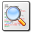

E-mail Templates
Template Editing Interface
Editing the e-mail templates is done through the Templates > E-mail Templates function in the control panel. That interface will look
something like this:

Search and Replace
-
Available Templates - This section will list all of the available site templates that you can edit. When you first access
the page, only this section will be shown. Click on a template name to load that template for editing.
Message Subject - Enter the subject you would like to use for the e-mail message
Message Body - Enter the body of the e-mail message
Toolbar Functions - Use the toolbar functions to peform the following actions:
 Click this icon to bring up the Search and Replace dialog where you can perform a search and replace on many templates at once.
 Click this icon to save the currently loaded template
Click this icon to save the currently loaded template Click this icon to reload the template code for the currently loaded template. This is useful when you do a search and replace which
affects the current template you are editing.
Click this icon to reload the template code for the currently loaded template. This is useful when you do a search and replace which
affects the current template you are editing. Click this icon to access this documentation file
Click this icon to access this documentation file
TradeX allows you to make quick changes to your templates in bulk with the Search and Replace function. When you access the Search and Replace function a dialog will appear that will allow you
to select the templates that you want to perform this action on, the code to search for in the template, and the replacement code to use. Multiple templates can be selected by holding down the shift or ctrl
keys on your keyboard as you click on templates in the selection list. Once you have selected the templates and entered the search and replacement code, press the Apply Changes button to start the task.
Once completed a notification message will be displayed letting you know how many replacements were made.
Greeting and Signature Templates
There are two special e-mail templates that you can edit which only allow configuring of the Message Body and do not have a Subject. Those are:
Templates & Their Variables
-
email-global-greeting.tpl - Use this template to control the text that is appended to the beginning of every e-mail message sent by the software.
This is a good place to put a simple greeting.
email-global-signature.tpl - Use this template to control the text that is appended to the end of every e-mail message sent by the software. This is a good place to put your signature, a privacy notice, a link to your site, etc.
All of the e-mail templates will have the following variables set:
$g_config
The software configuration settings
$g_trade
The trade account data
Below you will find a list of all the e-mail templates shipped with the software, a description of when the template is used, and details on the template variables available (if any) on that template.
$g_config
The software configuration settings
$g_config.site_name - Site Name
$g_config.traffic_url - Traffic URL
$g_config.base_url - TradeX URL
$g_config.cookie_domain - Cookie Domain
$g_config.cookie_path - Cookie Path
$g_config.email_address - E-mail Address
$g_config.email_name - E-mail Name
$g_config.date_format - Date Format
$g_config.time_format - Time Format
$g_config.flag_accept_new_trades - Accepting new trades
$g_config.flag_captcha_register - Use CAPTCHA on registration form
$g_config.flag_allow_login - Allow users to login with a password to view their stats
$g_config.site_name_min - Site name minimum length
$g_config.site_name_max - Site name maximum length
$g_config.site_description_min - Site description minimum length
$g_config.site_description_max - Site description maximum length
$g_config.flag_req_email - E-mail address required
$g_config.flag_req_site_name - Site name required
$g_config.flag_req_site_description - Site description required
$g_config.flag_req_icq - ICQ required
$g_config.flag_req_nickname - Name/Nickname required
$g_config.flag_req_banner - Banner URL required
$g_config.traffic_url - Traffic URL
$g_config.base_url - TradeX URL
$g_config.cookie_domain - Cookie Domain
$g_config.cookie_path - Cookie Path
$g_config.email_address - E-mail Address
$g_config.email_name - E-mail Name
$g_config.date_format - Date Format
$g_config.time_format - Time Format
$g_config.flag_accept_new_trades - Accepting new trades
$g_config.flag_captcha_register - Use CAPTCHA on registration form
$g_config.flag_allow_login - Allow users to login with a password to view their stats
$g_config.site_name_min - Site name minimum length
$g_config.site_name_max - Site name maximum length
$g_config.site_description_min - Site description minimum length
$g_config.site_description_max - Site description maximum length
$g_config.flag_req_email - E-mail address required
$g_config.flag_req_site_name - Site name required
$g_config.flag_req_site_description - Site description required
$g_config.flag_req_icq - ICQ required
$g_config.flag_req_nickname - Name/Nickname required
$g_config.flag_req_banner - Banner URL required
$g_trade
The trade account data
$g_trade.domain - Domain name
$g_trade.return_url - Traffic URL
$g_trade.status - Account status
$g_trade.email - E-mail address
$g_trade.nickname - Name/Nickname
$g_trade.icq - ICQ number
$g_trade.site_name - Site name
$g_trade.site_description - Site description
$g_trade.return_url - Traffic URL
$g_trade.status - Account status
$g_trade.email - E-mail address
$g_trade.nickname - Name/Nickname
$g_trade.icq - ICQ number
$g_trade.site_name - Site name
$g_trade.site_description - Site description
Below you will find a list of all the e-mail templates shipped with the software, a description of when the template is used, and details on the template variables available (if any) on that template.
email-forgot-confirm.tpl
-
This e-mail message will be sent to a trade account owner when they are requesting a lost password. In addition to the standard values in the $g_trade variable
there is also one additional value:
$g_trade.confirm_id - The confirmation ID that must be included in the URL to receive a new password
email-register-complete.tpl
-
This e-mail message will be sent to a trade account owner when they successfully complete the registraion process.
email-register-confirm.tpl
-
This e-mail message will be sent to a trade account owner after the complete the registration process if you are requiring new accounts to be confirmed by e-mail.
In addition to the standard values in the $g_trade variable there is also one additional value:
$g_trade.confirm_id - The confirmation ID that must be included in the URL to complete the registration process